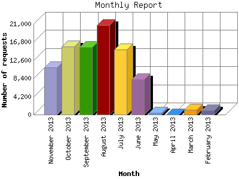

The Monthly Report identifies activity for each month in the report
time frame. Remember that each page hit can result in several server requests
as the images for each page are loaded.
Note: Depending on the
report time frame, the first and last months may not represent a complete
month's worth of data, resulting in lower hits.

| Month | Number of requests | Number of page requests | |
|---|---|---|---|
| 1. | February 2013 | 952 | 551 |
| 2. | March 2013 | 1,087 | 642 |
| 3. | April 2013 | 0 | 0 |
| 4. | May 2013 | 393 | 146 |
| 5. | June 2013 | 8,126 | 3,500 |
| 6. | July 2013 | 15,095 | 7,392 |
| 7. | August 2013 | 20,703 | 8,230 |
| 8. | September 2013 | 15,575 | 6,873 |
| 9. | October 2013 | 15,685 | 7,068 |
| 10. | November 2013 | 10,899 | 5,875 |
Most active month August 2013 : 8,230 pages sent. 20,703 requests handled.
Monthly average: 4,475 pages sent. 9,835 requests handled.
This report was generated on November 24, 2013 04:26.
Report time frame February 11, 2013 00:14 to November 23, 2013 23:59.
| Web statistics report produced by: analog 5.1 / Report Magic 2.21 |